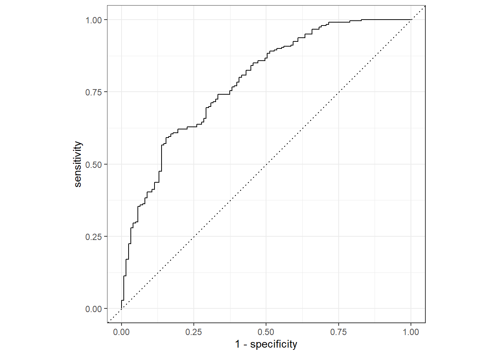
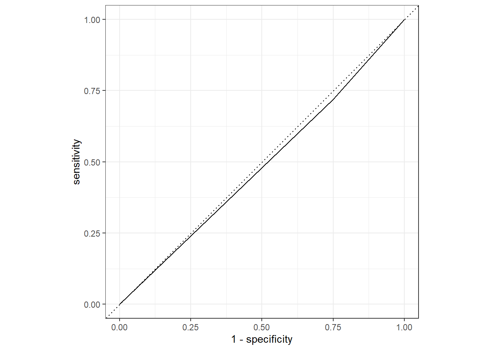

load("../../fluanalysis/data/clean_symptoms.rds")Model Evaluation
Set it Up
Read in previously cleaned data
Train and test:
set.seed(1234)
# Since we have less than 1000 observations, I'm going to do a 50/50 split.
data_split <- initial_split(select_sympact, prop = 1/2)
# Create data frames for the two sets:
train_data <- training(data_split)
test_data <- testing(data_split)Categorical + Everything
Recipe for a logistic model to our categorical outcome of interest (Nausea)
cat_recipe1 <-
recipe(Nausea ~ ., data = train_data) Fit a Model with Workflow
cat_model1 <-
logistic_reg() %>%
set_engine("glm")
cat1_wflow <-
workflow() %>%
add_model(cat_model1) %>%
add_recipe(cat_recipe1)
cat1_fit <-
cat1_wflow %>%
fit(data = train_data)
cat1_fit %>%
extract_fit_parsnip() %>%
tidy()# A tibble: 38 × 5
term estimate std.error statistic p.value
<chr> <dbl> <dbl> <dbl> <dbl>
1 (Intercept) -7.72 10.9 -0.706 0.480
2 SwollenLymphNodesYes -0.0254 0.288 -0.0880 0.930
3 ChestCongestionYes 0.639 0.326 1.96 0.0498
4 ChillsSweatsYes 0.545 0.450 1.21 0.226
5 NasalCongestionYes 0.297 0.362 0.821 0.412
6 CoughYNYes -0.446 0.710 -0.628 0.530
7 SneezeYes 0.336 0.316 1.07 0.287
8 FatigueYes 0.185 0.541 0.342 0.732
9 SubjectiveFeverYes -0.00883 0.345 -0.0256 0.980
10 HeadacheYes -0.0243 0.402 -0.0604 0.952
# … with 28 more rowsCheck with testing data
predict(cat1_fit, test_data)Warning in predict.lm(object, newdata, se.fit, scale = 1, type = if (type == :
prediction from a rank-deficient fit may be misleading# A tibble: 368 × 1
.pred_class
<fct>
1 No
2 No
3 Yes
4 No
5 Yes
6 No
7 No
8 No
9 Yes
10 No
# … with 358 more rowscat1_aug <-
augment(cat1_fit, test_data)Warning in predict.lm(object, newdata, se.fit, scale = 1, type = if (type == :
prediction from a rank-deficient fit may be misleading
Warning in predict.lm(object, newdata, se.fit, scale = 1, type = if (type == :
prediction from a rank-deficient fit may be misleadingcat1_aug# A tibble: 368 × 35
SwollenLymph…¹ Chest…² Chill…³ Nasal…⁴ CoughYN Sneeze Fatigue Subje…⁵ Heada…⁶
<fct> <fct> <fct> <fct> <fct> <fct> <fct> <fct> <fct>
1 Yes No No No Yes No Yes Yes Yes
2 Yes Yes No Yes Yes No Yes Yes Yes
3 Yes Yes Yes Yes No Yes Yes Yes Yes
4 Yes No Yes No No No Yes Yes Yes
5 No No Yes No Yes Yes Yes Yes Yes
6 No No Yes No Yes No Yes Yes No
7 No Yes Yes Yes Yes Yes Yes Yes Yes
8 Yes Yes Yes Yes Yes No Yes Yes Yes
9 Yes Yes Yes Yes No No Yes Yes Yes
10 No Yes Yes Yes Yes Yes Yes Yes Yes
# … with 358 more rows, 26 more variables: Weakness <fct>, WeaknessYN <fct>,
# CoughIntensity <fct>, CoughYN2 <fct>, Myalgia <fct>, MyalgiaYN <fct>,
# RunnyNose <fct>, AbPain <fct>, ChestPain <fct>, Diarrhea <fct>,
# EyePn <fct>, Insomnia <fct>, ItchyEye <fct>, Nausea <fct>, EarPn <fct>,
# Hearing <fct>, Pharyngitis <fct>, Breathless <fct>, ToothPn <fct>,
# Vision <fct>, Vomit <fct>, Wheeze <fct>, BodyTemp <dbl>, .pred_class <fct>,
# .pred_No <dbl>, .pred_Yes <dbl>, and abbreviated variable names …ROC - AUC
Training Data
cat1_train <-
augment(cat1_fit, train_data)Warning in predict.lm(object, newdata, se.fit, scale = 1, type = if (type == :
prediction from a rank-deficient fit may be misleading
Warning in predict.lm(object, newdata, se.fit, scale = 1, type = if (type == :
prediction from a rank-deficient fit may be misleadingcat1_train# A tibble: 367 × 35
SwollenLymph…¹ Chest…² Chill…³ Nasal…⁴ CoughYN Sneeze Fatigue Subje…⁵ Heada…⁶
<fct> <fct> <fct> <fct> <fct> <fct> <fct> <fct> <fct>
1 Yes Yes Yes Yes Yes No Yes Yes Yes
2 No Yes Yes No Yes No Yes No Yes
3 No No Yes No Yes Yes Yes No Yes
4 No No Yes Yes Yes No Yes No Yes
5 Yes Yes Yes No Yes No Yes Yes Yes
6 Yes No No Yes Yes Yes Yes No Yes
7 Yes No No Yes Yes No No No No
8 No No Yes No No No Yes No Yes
9 Yes No Yes Yes Yes Yes Yes No No
10 Yes Yes Yes Yes Yes No Yes Yes Yes
# … with 357 more rows, 26 more variables: Weakness <fct>, WeaknessYN <fct>,
# CoughIntensity <fct>, CoughYN2 <fct>, Myalgia <fct>, MyalgiaYN <fct>,
# RunnyNose <fct>, AbPain <fct>, ChestPain <fct>, Diarrhea <fct>,
# EyePn <fct>, Insomnia <fct>, ItchyEye <fct>, Nausea <fct>, EarPn <fct>,
# Hearing <fct>, Pharyngitis <fct>, Breathless <fct>, ToothPn <fct>,
# Vision <fct>, Vomit <fct>, Wheeze <fct>, BodyTemp <dbl>, .pred_class <fct>,
# .pred_No <dbl>, .pred_Yes <dbl>, and abbreviated variable names …cat1_train %>%
roc_curve(truth = Nausea, .pred_No) %>% #looked at the percent predicted NO Nausea rather than Yes to see the "under the curve" versus .pred_Yes providing area "over" the curve
autoplot()Warning: Returning more (or less) than 1 row per `summarise()` group was deprecated in
dplyr 1.1.0.
ℹ Please use `reframe()` instead.
ℹ When switching from `summarise()` to `reframe()`, remember that `reframe()`
always returns an ungrouped data frame and adjust accordingly.
ℹ The deprecated feature was likely used in the yardstick package.
Please report the issue at <]8;;https://github.com/tidymodels/yardstick/issueshttps://github.com/tidymodels/yardstick/issues]8;;>.
cat1_train %>%
roc_auc(truth = Nausea, .pred_No)# A tibble: 1 × 3
.metric .estimator .estimate
<chr> <chr> <dbl>
1 roc_auc binary 0.786Testing Data
cat1_aug %>%
roc_curve(truth = Nausea, .pred_No) %>% #looked at the percent predicted NO Nausea rather than Yes to see the "under the curve" versus .pred_Yes providing area "over" the curve
autoplot()cat1_aug %>%
roc_auc(truth = Nausea, .pred_No)# A tibble: 1 × 3
.metric .estimator .estimate
<chr> <chr> <dbl>
1 roc_auc binary 0.726We see that the training data performed a bit better with our augment ROC-AUC estimated to be 0.79 versus with the tested data at 0.73, but both are still < 0.70 which is a promising start.
Categorical + Main Predictor (RunnyNose)
Recipe for a logistic model to our categorical outcome of interest (Nausea)
cat_recipe2 <-
recipe(Nausea ~ RunnyNose, data = train_data) Fit a Model with Workflow
cat_model2 <-
logistic_reg() %>%
set_engine("glm")
cat2_wflow <-
workflow() %>%
add_model(cat_model2) %>%
add_recipe(cat_recipe2)
cat2_fit <-
cat2_wflow %>%
fit(data = train_data)
cat2_fit %>%
extract_fit_parsnip() %>%
tidy()# A tibble: 2 × 5
term estimate std.error statistic p.value
<chr> <dbl> <dbl> <dbl> <dbl>
1 (Intercept) -0.627 0.198 -3.16 0.00157
2 RunnyNoseYes -0.0312 0.238 -0.131 0.896 Check with testing data
predict(cat2_fit, test_data)# A tibble: 368 × 1
.pred_class
<fct>
1 No
2 No
3 No
4 No
5 No
6 No
7 No
8 No
9 No
10 No
# … with 358 more rowscat2_aug <-
augment(cat2_fit, test_data)
cat2_aug# A tibble: 368 × 35
SwollenLymph…¹ Chest…² Chill…³ Nasal…⁴ CoughYN Sneeze Fatigue Subje…⁵ Heada…⁶
<fct> <fct> <fct> <fct> <fct> <fct> <fct> <fct> <fct>
1 Yes No No No Yes No Yes Yes Yes
2 Yes Yes No Yes Yes No Yes Yes Yes
3 Yes Yes Yes Yes No Yes Yes Yes Yes
4 Yes No Yes No No No Yes Yes Yes
5 No No Yes No Yes Yes Yes Yes Yes
6 No No Yes No Yes No Yes Yes No
7 No Yes Yes Yes Yes Yes Yes Yes Yes
8 Yes Yes Yes Yes Yes No Yes Yes Yes
9 Yes Yes Yes Yes No No Yes Yes Yes
10 No Yes Yes Yes Yes Yes Yes Yes Yes
# … with 358 more rows, 26 more variables: Weakness <fct>, WeaknessYN <fct>,
# CoughIntensity <fct>, CoughYN2 <fct>, Myalgia <fct>, MyalgiaYN <fct>,
# RunnyNose <fct>, AbPain <fct>, ChestPain <fct>, Diarrhea <fct>,
# EyePn <fct>, Insomnia <fct>, ItchyEye <fct>, Nausea <fct>, EarPn <fct>,
# Hearing <fct>, Pharyngitis <fct>, Breathless <fct>, ToothPn <fct>,
# Vision <fct>, Vomit <fct>, Wheeze <fct>, BodyTemp <dbl>, .pred_class <fct>,
# .pred_No <dbl>, .pred_Yes <dbl>, and abbreviated variable names …ROC - AUC
Training Data
cat2_train <-
augment(cat2_fit, train_data)
cat2_train# A tibble: 367 × 35
SwollenLymph…¹ Chest…² Chill…³ Nasal…⁴ CoughYN Sneeze Fatigue Subje…⁵ Heada…⁶
<fct> <fct> <fct> <fct> <fct> <fct> <fct> <fct> <fct>
1 Yes Yes Yes Yes Yes No Yes Yes Yes
2 No Yes Yes No Yes No Yes No Yes
3 No No Yes No Yes Yes Yes No Yes
4 No No Yes Yes Yes No Yes No Yes
5 Yes Yes Yes No Yes No Yes Yes Yes
6 Yes No No Yes Yes Yes Yes No Yes
7 Yes No No Yes Yes No No No No
8 No No Yes No No No Yes No Yes
9 Yes No Yes Yes Yes Yes Yes No No
10 Yes Yes Yes Yes Yes No Yes Yes Yes
# … with 357 more rows, 26 more variables: Weakness <fct>, WeaknessYN <fct>,
# CoughIntensity <fct>, CoughYN2 <fct>, Myalgia <fct>, MyalgiaYN <fct>,
# RunnyNose <fct>, AbPain <fct>, ChestPain <fct>, Diarrhea <fct>,
# EyePn <fct>, Insomnia <fct>, ItchyEye <fct>, Nausea <fct>, EarPn <fct>,
# Hearing <fct>, Pharyngitis <fct>, Breathless <fct>, ToothPn <fct>,
# Vision <fct>, Vomit <fct>, Wheeze <fct>, BodyTemp <dbl>, .pred_class <fct>,
# .pred_No <dbl>, .pred_Yes <dbl>, and abbreviated variable names …cat2_train %>%
roc_curve(truth = Nausea, .pred_No) %>%
autoplot()cat2_train %>%
roc_auc(truth = Nausea, .pred_No)# A tibble: 1 × 3
.metric .estimator .estimate
<chr> <chr> <dbl>
1 roc_auc binary 0.503Testing Data
cat2_aug %>%
roc_curve(truth = Nausea, .pred_No) %>%
autoplot()
cat2_aug %>%
roc_auc(truth = Nausea, .pred_No)# A tibble: 1 × 3
.metric .estimator .estimate
<chr> <chr> <dbl>
1 roc_auc binary 0.485Here we see a similar difference between the train/test models with a difference of about 0.2 in the ROC-AUC estimates; however, overall type of model performs a lot worse than the predictive power of that with all the variables included. This makes sense as there are many types of symptoms associated in different componations with different illnesses, so accounting for these especially for an illness as general as the flu may be more advantageous in predicting the patient’s symptoms/experience.
This section was added by Christian Okitondo
Fitting the above steps with a continuous outcome (Body Temperature) and all preditors
flu_mod10_cont_rec <- recipe(BodyTemp ~ ., data = train_data) Workflow creation and model fitting
# Linear regression
cont_model1 <-
linear_reg() %>%
set_engine("lm")
# Paring model with receip
cont1_wflow <-
workflow() %>%
add_model(cont_model1) %>%
add_recipe(flu_mod10_cont_rec)
# Looking at the model output
cont1_fit <-
cont1_wflow %>%
fit(data = train_data)
cont1_fit %>%
extract_fit_parsnip() %>%
tidy()# A tibble: 38 × 5
term estimate std.error statistic p.value
<chr> <dbl> <dbl> <dbl> <dbl>
1 (Intercept) 97.8 0.451 217. 0
2 SwollenLymphNodesYes -0.406 0.137 -2.96 0.00328
3 ChestCongestionYes 0.116 0.150 0.774 0.440
4 ChillsSweatsYes -0.0681 0.200 -0.340 0.734
5 NasalCongestionYes -0.0587 0.168 -0.350 0.726
6 CoughYNYes 0.201 0.322 0.626 0.532
7 SneezeYes -0.292 0.149 -1.95 0.0515
8 FatigueYes 0.329 0.236 1.40 0.164
9 SubjectiveFeverYes 0.532 0.162 3.29 0.00111
10 HeadacheYes 0.114 0.186 0.614 0.540
# … with 28 more rowsUsing the trained workflow (cont1_fit) to predict with the unseen test data
predict(cont1_fit, test_data)Warning in predict.lm(object = object$fit, newdata = new_data, type =
"response"): prediction from a rank-deficient fit may be misleading# A tibble: 368 × 1
.pred
<dbl>
1 99.2
2 99.3
3 98.9
4 99.0
5 99.4
6 99.6
7 98.7
8 98.5
9 99.1
10 98.7
# … with 358 more rowscont1_aug <-
augment(cont1_fit, test_data)Warning in predict.lm(object = object$fit, newdata = new_data, type =
"response"): prediction from a rank-deficient fit may be misleadingcont1_aug# A tibble: 368 × 33
SwollenLymph…¹ Chest…² Chill…³ Nasal…⁴ CoughYN Sneeze Fatigue Subje…⁵ Heada…⁶
<fct> <fct> <fct> <fct> <fct> <fct> <fct> <fct> <fct>
1 Yes No No No Yes No Yes Yes Yes
2 Yes Yes No Yes Yes No Yes Yes Yes
3 Yes Yes Yes Yes No Yes Yes Yes Yes
4 Yes No Yes No No No Yes Yes Yes
5 No No Yes No Yes Yes Yes Yes Yes
6 No No Yes No Yes No Yes Yes No
7 No Yes Yes Yes Yes Yes Yes Yes Yes
8 Yes Yes Yes Yes Yes No Yes Yes Yes
9 Yes Yes Yes Yes No No Yes Yes Yes
10 No Yes Yes Yes Yes Yes Yes Yes Yes
# … with 358 more rows, 24 more variables: Weakness <fct>, WeaknessYN <fct>,
# CoughIntensity <fct>, CoughYN2 <fct>, Myalgia <fct>, MyalgiaYN <fct>,
# RunnyNose <fct>, AbPain <fct>, ChestPain <fct>, Diarrhea <fct>,
# EyePn <fct>, Insomnia <fct>, ItchyEye <fct>, Nausea <fct>, EarPn <fct>,
# Hearing <fct>, Pharyngitis <fct>, Breathless <fct>, ToothPn <fct>,
# Vision <fct>, Vomit <fct>, Wheeze <fct>, BodyTemp <dbl>, .pred <dbl>, and
# abbreviated variable names ¹​SwollenLymphNodes, ²​ChestCongestion, …RMSE
Starting with Training data
cont1_train <-
augment(cont1_fit, train_data)Warning in predict.lm(object = object$fit, newdata = new_data, type =
"response"): prediction from a rank-deficient fit may be misleadingyardstick::rmse(cont1_train, BodyTemp, .pred)# A tibble: 1 × 3
.metric .estimator .estimate
<chr> <chr> <dbl>
1 rmse standard 1.13RMSE of training model is around 1.13
Now Testing data
yardstick::rmse(cont1_aug, BodyTemp, .pred)# A tibble: 1 × 3
.metric .estimator .estimate
<chr> <chr> <dbl>
1 rmse standard 1.19RMSE of testing model is around 1.15
Thus, the training model perfomence is slighly better than the testing, but that difference is very minimal (1.15 - 1.13 = 0.02).
Continuous with RunnyNose as the main predictor
cont_recipe2 <-
recipe(BodyTemp ~ RunnyNose, data = train_data) Fit a Model with Workflow
# Setting up a linear model
cont_model2 <-
linear_reg() %>%
set_engine("lm")
# Modeling workflow for pairing model and recipe
cont2_wflow <-
workflow() %>%
add_model(cont_model2) %>%
add_recipe(cont_recipe2)
# Using the resulting predictors for preparing recipe and training model
cont2_fit <-
cont2_wflow %>%
fit(data = train_data)
# Pulling the fitted model object and using tidy() function for getting a tidy tibble of model coefficients.
cont2_fit %>%
extract_fit_parsnip() %>%
tidy()# A tibble: 2 × 5
term estimate std.error statistic p.value
<chr> <dbl> <dbl> <dbl> <dbl>
1 (Intercept) 99.1 0.116 852. 0
2 RunnyNoseYes -0.187 0.140 -1.33 0.183RMSE
Starting with Trainind data
cont2_train <-
augment(cont2_fit, train_data)
yardstick::rmse(cont2_train, BodyTemp, .pred)# A tibble: 1 × 3
.metric .estimator .estimate
<chr> <chr> <dbl>
1 rmse standard 1.23Estimated RMSE is 1.23
Now using the testing data
predict(cont2_fit, test_data)# A tibble: 368 × 1
.pred
<dbl>
1 99.1
2 99.1
3 98.9
4 99.1
5 99.1
6 98.9
7 98.9
8 98.9
9 99.1
10 98.9
# … with 358 more rowscont2_aug <-
augment(cont2_fit, test_data)
cont2_aug# A tibble: 368 × 33
SwollenLymph…¹ Chest…² Chill…³ Nasal…⁴ CoughYN Sneeze Fatigue Subje…⁵ Heada…⁶
<fct> <fct> <fct> <fct> <fct> <fct> <fct> <fct> <fct>
1 Yes No No No Yes No Yes Yes Yes
2 Yes Yes No Yes Yes No Yes Yes Yes
3 Yes Yes Yes Yes No Yes Yes Yes Yes
4 Yes No Yes No No No Yes Yes Yes
5 No No Yes No Yes Yes Yes Yes Yes
6 No No Yes No Yes No Yes Yes No
7 No Yes Yes Yes Yes Yes Yes Yes Yes
8 Yes Yes Yes Yes Yes No Yes Yes Yes
9 Yes Yes Yes Yes No No Yes Yes Yes
10 No Yes Yes Yes Yes Yes Yes Yes Yes
# … with 358 more rows, 24 more variables: Weakness <fct>, WeaknessYN <fct>,
# CoughIntensity <fct>, CoughYN2 <fct>, Myalgia <fct>, MyalgiaYN <fct>,
# RunnyNose <fct>, AbPain <fct>, ChestPain <fct>, Diarrhea <fct>,
# EyePn <fct>, Insomnia <fct>, ItchyEye <fct>, Nausea <fct>, EarPn <fct>,
# Hearing <fct>, Pharyngitis <fct>, Breathless <fct>, ToothPn <fct>,
# Vision <fct>, Vomit <fct>, Wheeze <fct>, BodyTemp <dbl>, .pred <dbl>, and
# abbreviated variable names ¹​SwollenLymphNodes, ²​ChestCongestion, …## RMSE - TEST
yardstick::rmse(cont2_aug, BodyTemp, .pred)# A tibble: 1 × 3
.metric .estimator .estimate
<chr> <chr> <dbl>
1 rmse standard 1.15Estimated RMSE is 1.15.
Thus the testing model performs better than the training model.